Clash删库跑路了，加上最近跟朋友联机打原神（divinityXD）遇挫，组局域网时查了很多资料用到了很多软件，想起五年前就研究过这个问题，特此把相关问题系统地整理一遍以防今后再忘。
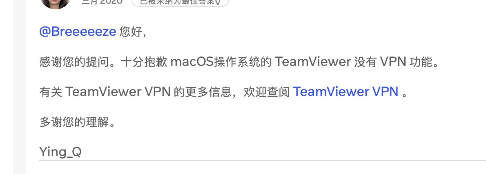
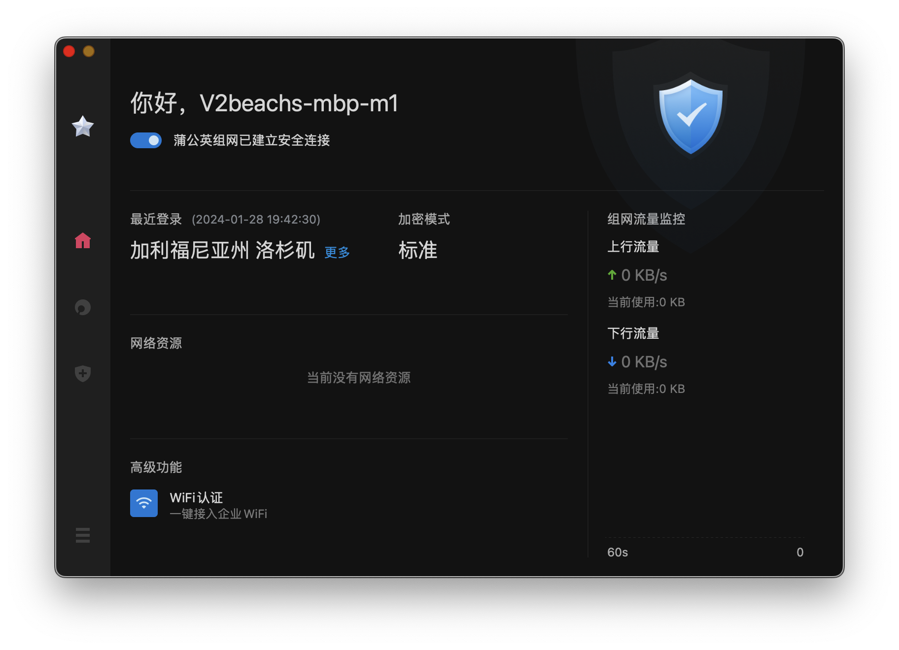
VPN
wikibook的VPN比wikipedia讲得好多了，在这翻译成中文（其中引用的部分是原文或者大致机翻）。
A company that wants to build a corporate private network for its remote terminals (single users, data-centers, branches) can adopt two different approaches:
- the company can build its own dedicated infrastructure (leased line, dial-up connection);
- the company can adopt a VPN solution.
一家想为远程终端（单个用户（比如在家连公司内网）、数据中心（远程服务器群和公司网络连接）、分部（比如商汤上海连香港的设备））建设企业专用网络(corporate private network)的公司可以采用两种方式：
- 建设自己的专用基础设施（租用线路、拨号连接）；
- 采用VPN解决方案。
A Virtual Private Network (VPN) allows a company to deploy connectivity to multiple users over a public shared infrastructure (the Internet or an Internet Service Provider's network) enforcing its own policies (such as security, quality of service, private addressing) as if it was its own private network. The advantages of a VPN solution are:
- cheapness: expensive physical connections up to the remote users have not to be built anymore, but the VPN solution exploits a pre-existing infrastructure so that the cost is shared;
- selectivity: thanks to a firewall only the users having the rights can access → greater security;
- flexibility: allowed users can easily be added, and users can easily move.
虚拟专用网络（VPN）允许公司通过公共共享基础设施（互联网或者互联网运营商）部署多用户的、执行其自己的策略（安全、服务质量、专用寻址）的连接，就好像是正在用专用网络。
A VPN is made up of some main components:
- data are delivered through tunnels, so they are separated by other data moving around over the shared infrastructure, by using protocols such as GRE, L2TP, MPLS, PPTP and IPsec;
- data are encrypted for a greater security, by using protocols such as IPsec and MPPE;
- data are checked for integrity, so they can not be tampered, thanks to TCP checksum or AH in IPsec; integer，integral，integrity
- before a tunnel is set up, the identity of who is on the other side of the tunnel is checked through authentication mechanisms (for example by using digital certificates).
一个虚拟专用网络（VPN）有以下几个主要部分：
- 数据通过tunnel隧道传输，因此它们和共享基础设施上的其他数据分开单独运作，用到的协议有GRE, L2TP, MPLS, PPTP和IPsec；
- 数据被更强地加密，用到IPsec和MPPE之类的协议；
- 数据会被检查完整性因此不会被篡改，用到TCP校验和或者IPsec协议里的AH；
- 在一个隧道被建立之前，会通过认证机制检查隧道另一边的ID，比如用数字证书。
分类
VPN解决方案可按以下几个方面分类：
- 部署(deployment): 远程拨号或站到站（内部网/外部网）(access or site-to-site (intranet/extranet));
- 网络访问(internet access): 中心化或分布式的(centralized or distributed);
- 模型(model): 覆盖或peer(overlay or peer);
- 供应(provision): 消费者或供应商(customer or provider);
- 层(layer): layer 2, layer 3 or layer 4;
- 虚拟拓扑(virtual topology): hub and spoke or mesh.
| overlay | peer | |
|---|---|---|
| access | L2TP, PPTP | |
| site-to-site | IPsec, GRE | MPLS |
Deployment scenarios
VPNs可部署在两个场景中：
- access VPN（也叫做远程VPN或虚拟拨号(virtual dial in)）：虚拟化拨号连接，通过ISDN、PSTN、cable modem、wireless LAN用PPTP和L2TP协议，连接单个用户到企业网络；
- 站到站VPN：虚拟化租用线路（leased line, 专线），通过如IPsec、GRE和MPLS协议，使多个远程网络互相连接。
- 内部网VPN：所有相连的网络属于同一个公司；
- 外部网VPN：相联的网络属于多家公司。
VPN 功能必须满足一些要求：
- 安全性：防火墙可以限制对网络资源的访问；
- 数据加密：为了保护通过共享基础设施传输的信息；
- 可靠性：必须保证关键任务流量到达目的地；
- 可扩展性：解决方案必须适用于小型和大型网络；
- 增量部署：解决方案随着网络的增长而持续工作；
- 访问 VPN 的附加要求：
- 强认证：为了验证移动用户的身份（例如个人笔记本可能被盗）；
- 用户及其账户的集中管理；
- 站点到站点外部网VPN 的附加要求：
- 中心化网络访问：所有与公网往来的流量(traffic)总是经过VPN网关總部(headquaters)；
- 分布式网络访问：与公网往来的流量不涉及VPN(the traffic towards and from Internet does not involve the VPN)，VPN只为了企业流量部署。
集中式互联网接入
- 优点
- 集中策略管理：公司可以为所有连接的远程终端一次性设置自己的互联网访问策略（例如禁止员工在工作时访问某些网站）；
- 安全优势：企业防火墙可以保护主机免受来自互联网的恶意数据包的侵害。
- 缺点
- 远程终端速度较低：进出互联网的数据包必须经过更多的跳数，因为它们总是必须经过总部 VPN 网关，而不是直接前往目的地；
- 总部需要更高的带宽；
- 强制连接：VPN必须始终处于活动状态，即用户不能在没有企业防火墙保护的情况下暂时禁用VPN并上网，否则如果回到VPN时被感染，就会感染企业 网络，因为来自他的流量没有防火墙。
分布式互联网接入
- 优点
- 远程终端速度更高：数据包始终直接前往互联网目的地；
- 自愿连接：用户可以随时禁用VPN，而不会产生额外的安全威胁。
- 缺点
- 覆盖模型：基础设施不知道VPN解决方案的存在，只提供IP连接服务：基础设施只携带包而不知道这些是VPN的包，在不与基础设施交互的VPN网关之间，基础设施的管理者无法查看隐私数据或不能利用路由信息(leverage routing info)；（数据安全）
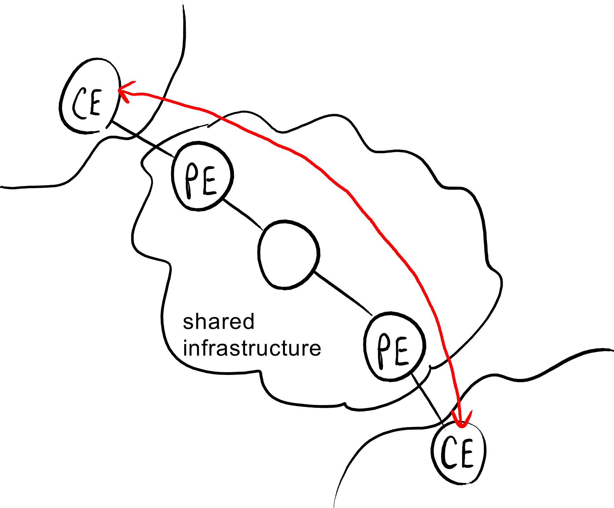
- peer模型：基础设施内的网关参与VPN的创建和交互。（路由更好，更可扩展性）
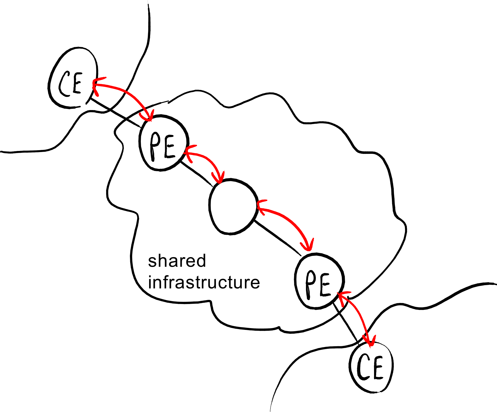
不基于MPLS(见下文)的peer模型VPNs可以是：- 专用路由(dedicated router)：基础设施的管理者给一个消费者提供一些路由，再给另一个消费者提供另一些路由；
- 共享路由：基础设施里的每个路由器都在多个消费者之间共享。
Provision
VPNs可以由消费者或供应商提供：- 消费者提供：用户自行创建并管理VPN，隧道在消费者端(CE)之间建立；
- 供应商提供：VPN由互联网连接的供应商统一提供，隧道在供应者端(PE)间建立。 消费者提供的VPN不会是peer模型的，因为供应商不可能知道一个消费者自己创建的VPN。
Layers
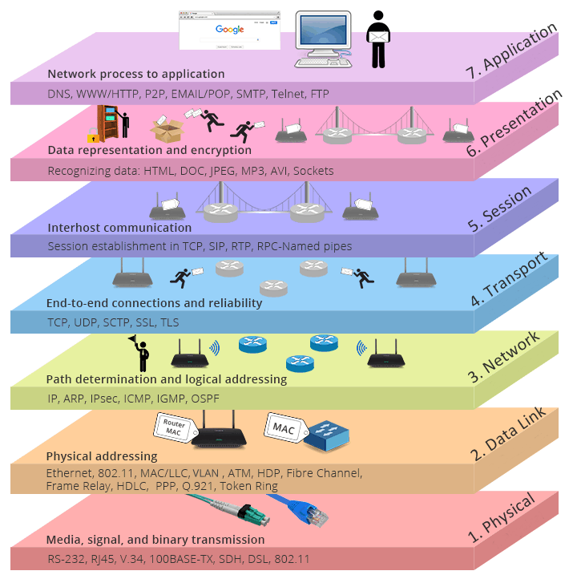
VPN连接可以位于不同层：- 2层：VPN中交换的是以太包：
- Virtual Private LAN Service (VPLS, 虚拟专用局域网服务)：虚拟一个局域网：终端好像在同一个局域网里一样互相连接；（可以广播包broadcast packets）
- Virtual Private Wire Service (VPWS, 虚拟专用有线服务)：虚拟一个专线（在一个交换包的网络里packeet-switching network）；
- IP-only LAN-like Service (IPLS, 仅IP类局域网服务)：虚拟一个IP网络，但只有IP(ICMP, ARP)包是被允许的；
- 3层：VPN中交换的是IP包：
- 4层：VPN中建立TCP连接（可能为安全会用SSL）。
Virtual topologies
VPNs可以根据虚拟拓扑结构分成两类：- hub and spoke(轮毂和辐条，轮辐模型)：每对终端彼此之间只通过总部交流；（瓶颈bottleneck可能会出现高流量）
- mesh网格：每对终端可以彼此直接连接，不需要经过总部headquaters。（路由更好，但是隧道数更多）
协议
PPP
Point-to-Point Protocol点对点协议是2层协议，用点到点P2P连接（拨号，ISDN）封装(encapsulate)任何上层协议，是HDLC(High-Level Data Link Control)的扩展。
一个PPP包格式如下： |1 byte|1 byte|1 byte|1 or 2 bytes||2 or 4 bytes|1 byte| |---|---|---|---|---|---|---| |01111110 (flag)|Address|Control|Protocol|Data|CRC|01111110 (flag)|
- 头部和尾部的标记：对数据帧都是必须的；
- 地址和控制区域：继承自HDLC但在P2P连接里是完全无意义的；留着仅仅为了提升HDLC设备的算法过程；
- 协议区域：为所封装encapsulated的包明确上层的协议。
‘01111110’是帧的边界，避免歧义的填充规则(stuffing rules)是，如果数据里有这串数据 / 出现转义序列(escape sequence)本身的话的话，都会在flag插入01111101（最后两位从10变为01）：
Link Control Protocol(LCP, 链路控制协议)，PPP的子集，任务是开关PPP连接，控制一些设置，比如帧最大长度、认证协议。
GRE
IP包不能直接封装(encapsulate)一个3层以下的协议（IP本身是OSI3层），因为Ipv4头的协议区域'Protocol' field只能规定3层以上的协议(TCP, UDP, ICMP...)。 Generic Routing Encapsulation(GRE)是一个封装任何协议到IP里的协议（包括IP和1层2层的其他协议）：GRE头插入在封装IP头和被封装包之间，在封装IP头的'Protocol' field设置为47。
GRE头格式如下：
| 5 | 8 | 13 | 16 | 32 | ||||
| C | R | K | S | s | Recur | Flags | Version (0) | Protocol type |
| Checksum (optional) | Offset (optional) | |||||||
| Key (optional) | ||||||||
| Sequence number (optional) | ||||||||
| Routing (optional) ::: | ||||||||
- C, R, K, S flags (1 bit each one)：表明后续可选区域存在与否；
- 严格来源路由标记 strict source routing (s) flag (1 bit)：if s==1且来源路由列表('Routing')结束了而目标还没达到，丢弃这个包（类似TTL）；
- Recur field (3 bits)：指定允许的最大附加封装数（目前不支持）；
- Version field (3 bits)：指明GRE协议的版本，这里的版本是0，下面Enhanced GRE加强版是1；
- Protocol type field (16 bits)：指明封装包的协议；
- Routing field：指明包需要经过的中间路由的IP地址序列；除sequence of IPs之外依次：
- Address family field：指明表里IP分别是什么类型；
- SRE Offset field：是一个指向路由下一跳的IP地址的指针，包每次流转后都要更新；
- SRE Length field：指明IP地址表的长度。
Enhanced GRE header:
5 8 13 16 32 C R K S s Recur A Flags Version (1) Protocol type Key (payload length) Key (call ID) Sequence number (optional) Acknowledgment number (optional)
L2TP
Layer 2 Tunneling Protocol 2层隧道协议是将任何第2层协议（本文中的就是 PPP）通过隧道传输到IP的协议。L2TP最初是为供应商提供(provider provision)的access VPNs设计的，由IETF标准化；后来通过在用户机器里简单实现了LAC(L2TP Access Concentrator)功能被扩展到消费者提供(customer provision)的access VPNs。
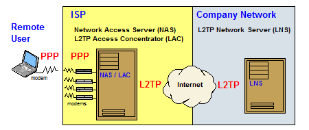
在L2TP原始参考场景里，远程用户希望通过P2P(PPP)协议向企业网络里的内部服务器发数据包。这需要一个通向目标L2TP Network Server(LNS)的L2TP隧道以及隧道内L2TP会话(session)来模拟(emulate)服务提供商网络上的PPP连接。
当PPP帧到达LAC时，如果还没有跟LNS建立L2TP隧道，在开启L2TP会话之前就需要LAC跟LNS建立L2TP隧道：LNS向LAC进行身份认证，方式是基于挑战(chanllenge-based)的Challenge Handshake Authentication Protocol (CHAP)询问握手认证协议，然后一个新的控制连接就建立了。
每个L2TP session在隧道(tunnel)里都用两个通道(channels)：
- 数据通道data channel：携带数据，就是PPP数据帧；
- 控制通道control channel：交换控制消息，为了管理通信（比如验证数据包是否到达、重新传输丢失的数据包、检查数据包的正确顺序）。
- 跟数据消息相反，控制消息通过一个可靠的方式交换：丢失的控制消息全部都要被重传。
多个会话可以共存(coexist)在一个隧道里，共享相同的控制连接，为了区分不同远程用户的不同PPP帧流：每个隧道用一个tunnel ID标识，每个会话用一个session ID标识。
安全性
隧道建立过程中除了确保验证(authentication)之外，L2TP本身不提供任何安全机制：实际上对隧道里传输的L2TP数据包(packets)用加密之类的机制是没有意义的(doesn't make sense)，因为服务提供者的LAC仍然可以看到 2 层的数据帧——任何加密机制的实现都必须是端到端的（用户跟企业网络的那个目的地之间）。
被封装了多个头的L2TP隧道里的数据包如下所示： |MAC header|IP header|UDP header|L2TP header|PPP header|PPP payload| |--|--|--|--|--|--|
PPP header
标识远程用户与公司网络内的内部服务器之间的点对点连接。
L2TP header
L2TP头标识L2TP隧道：
| 8 | 16 | 32 | |||||||
| T | L | 0 | S | 0 | O | P | 0 | Version (2) | Length |
| Tunnel ID | Session ID | ||||||||
| Ns | Nr | ||||||||
| Offset size | Offset pad ::: | ||||||||
- T flag (1 bit): 是0就是数据消息，是1就是控制消息；
- Tunnel ID field (16 bits): 标识L2TP隧道；
- Session ID field (16 bits): 标识L2TP会话，即隧道(tunnel)里的数据通道(data channel)；
- Ns field (16 bits): 包含数据/控制消息的序列号；
- Nr field (16 bits): 包含用于建立可靠连接的下一个控制消息的序列号。
UDP header
为什么一个 4 层的协议UDP被用来传 2 层的数据帧？可以通过考虑一般网络上的防火墙来解释：如果数据包不包含第 4 层封装，则更容易被防火墙丢弃。
另一个可能的原因是 4 层可以用sockets(套接字)访问，而操作系统控制第 3 层。因为L2TP希望成为一个跟PPTP（由操作系统厂商提出的）相对的解决方案，L2TP设计者希望让它可以访问应用但不太
IP header
Concepts
IETF
IETF（互联网工程任务组，The Internet Engineering Task Force）是松散的、自律的、志愿的民间学术组织，制定了几乎所有重要的网络底层协议。
The Tao of IETF, IETF之道—page 5—我们没有会员的概念，只要你加入了邮件列表，就可以看作是IETF成员。
MPLS
Multi-Protocol Label Switching，多协议标签交换是一种电信网络上利用标签（label）引导资料传输的路由技术。相较于传统上利用网络地址来决定下一个节点，MPLS 则使资料沿着预定的路径发送，因此能减少在路由器上所花费的时间（不需要IP路由计算）。多协议意指 MPLS 支持多种网络协议，并且也支持多种网络第二层的协议。
当一个未被标记的分组（IP包、帧中继或ATM信元(Asynchronous Transfer Mode Cel, 流量数据结构)）到达MPLS LER(label edge router)时，入口 LER根据输入分组头查找路由表以确定通向目的地的标记交换路径LSP(Label Switching Path)，把查找到的对应LSP的标记插入到分组头中，完成端到端IP地址与MPLS标记的映射。
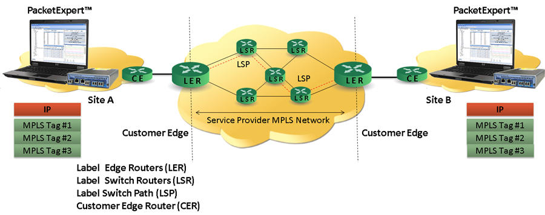
LAC
L2TP access concentrator, access concentrator, L2TP访问集中器，
A broadband remote access server (BRAS, B-RAS or BBRAS) routes traffic to and from broadband remote access devices such as digital subscriber line access multiplexers (DSLAM) on an Internet service provider's (ISP) network. BRAS can also be referred to as a broadband network gateway or border network gateway (BNG).
宽带远程接入服务器（BRAS、B-RAS 或 BBRAS）将流量路由至宽带远程接入设备（例如 Internet 服务提供商 (ISP) 网络上的数字用户线路接入复用器 (DSLAM)）。BRAS也可以称为宽带网络网关或边界网络网关（BNG）。
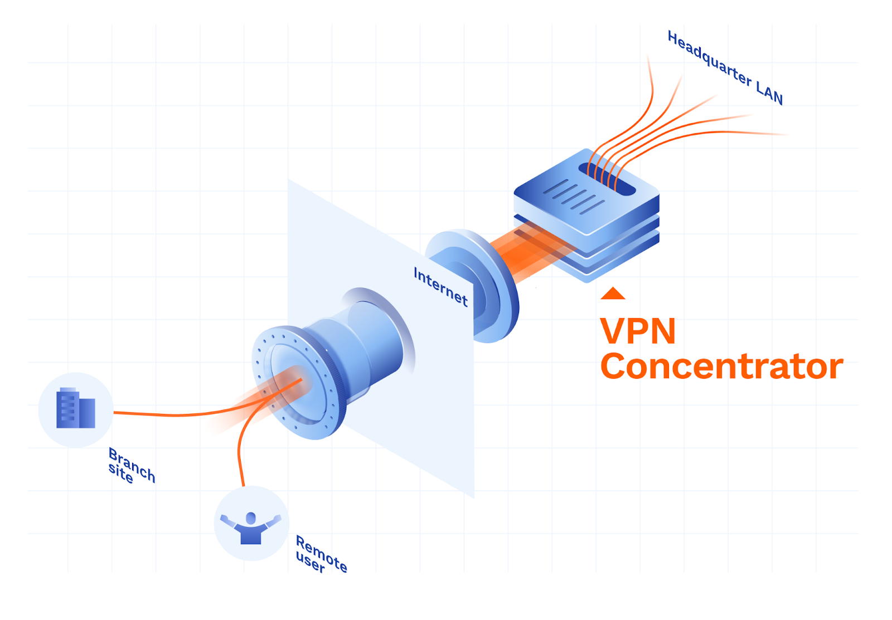
MPPE
ISDN
PSTN
cable modem
Proxy
VLAN
NAT
Network Address Translation
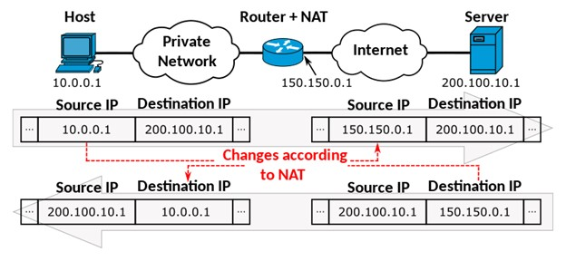
内网穿透以前用nginx配过。
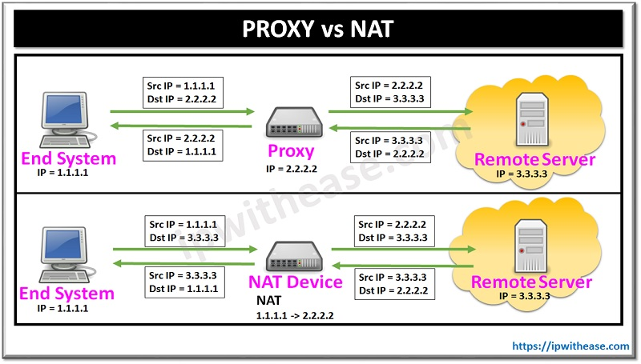
DHCP, DNS, DDNS
DHCP
Dynamic Host Configuration Protocol
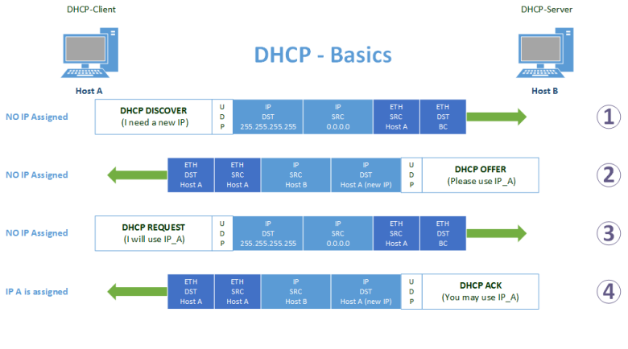
PPPOE vs DHCP Point-to-Point Protocol over EthernetMSAN multi-service access node STB数字视频变换盒/机顶盒（Set Top Box） RG residential gateway
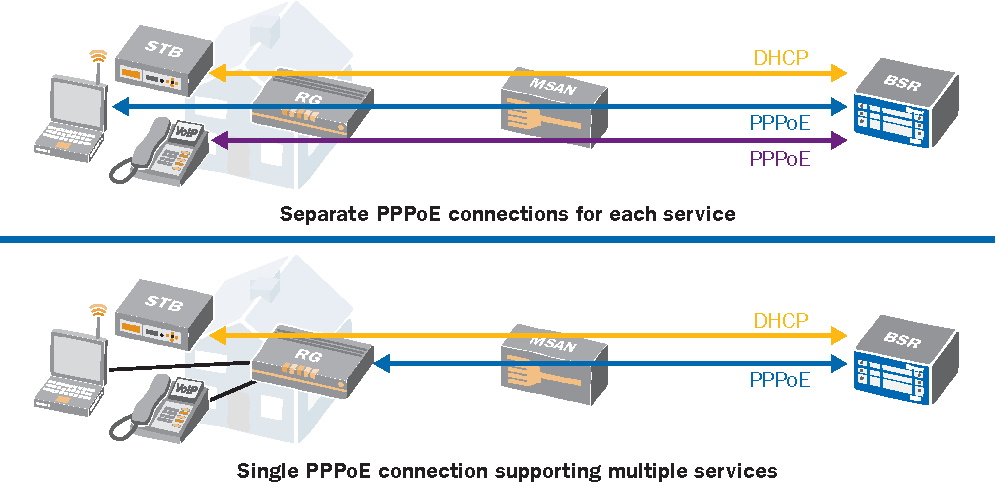
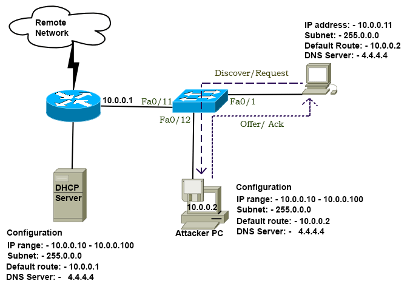
看到那些Cisco的图，仿佛回到了2019年。DNS
Domain Name System
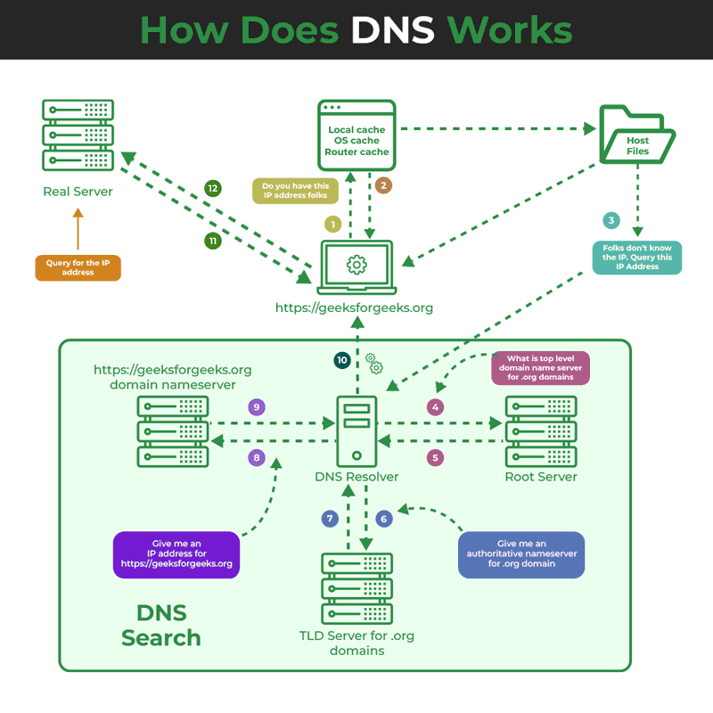
其实所谓的1234567层不过是把一段数据封装7次header罢了，cs144上完后对这篇文章进一步补充，Access VPNs、Site-to-site VPNs、SSL (pseudo)VPNs。